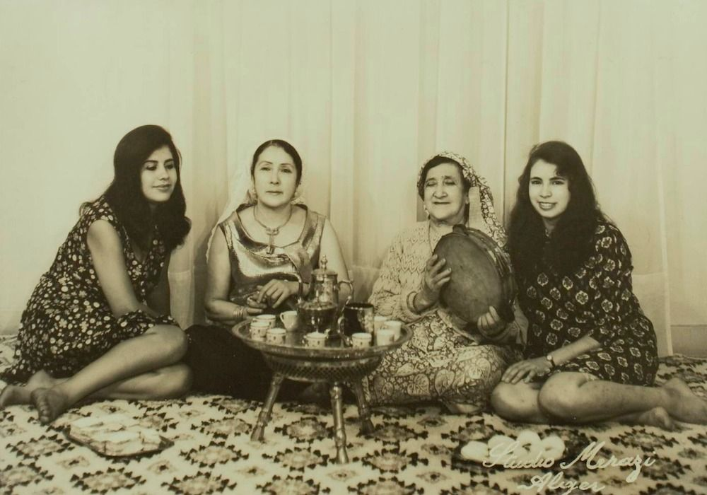
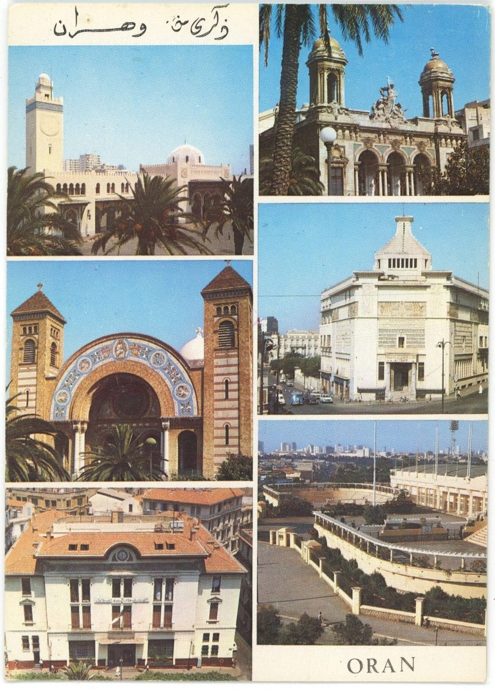
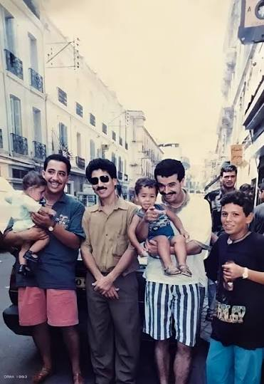
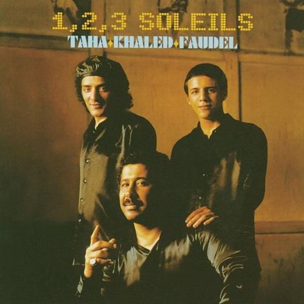

On Algeria’s Soundtrack of Rebellion, Exile and Reinvention
An Outsiders Confession
I write this in the comfort of my home in Amman, infatuated at the top of the morning by a genre I’ve always viewed as Alien, it all started slowly piecing itself together. That genre is rai, the traditional folk music of Algeria, or the soundtrack to the franco-maghribi population in France, the music that originated in coastal city of Oran, or its neighbor Sidi Bel Abbès, all of these disputes provided more questions than answer, yet the dispute itself provided more questions that no number of answers can satisfy.
The Maghrib Stereotype
Ask the average Levantine individual about the Maghrib, you will get a few answers aligned within each other. To start, they would start mimicking the fast-paced thick Moroccan/Algerian/Tunisian accents, usually followed with “bel zif” or singing “Aicha-Aicha” a hit Cheb Khaled song. That all comes from a place of infatuation, of a place we know so little about culturally. I, too was guilty of the mimicking norm, yet as someone who’s consistently intrigued by the region’s music, my brain is capable of piecing the familiarity of Rai, yet is just as capable of distinguishing it as different than the poetry based “Tarab” I’ve grown accustomed to hearing in the heart of the Levantine community. More so, with the new emergence of “Rai Wave”, deemed a subgenre of Rai, and shunned by the older Rai fanbase as meaningless and distorted, I struggled again to make sense of the connection. So, bear with me as I do this in front of your attentive eyes.
Cheikhas, Malhoun, and the Birth of a Voice

There’s no such thing as a definitive birthplace of Rai, but that’s heavily credited to Oran, Algeria due to a number of reasons that I will get to in due time. Simply put, Rai in the traditional sense, was born out of the rural populations of the Maghrib. In the early 20th century, Maghribi Women would perform in rural celebrations of communal events. Tahara (Circumcision) ceremonies are one example, where families would get together in the village to celebrate the occasion. Women took the lead to perform in such ceremonies, dubbed “Cheikhas” a name given to these female bards, they would perform traditional poetry (Malhoun) over Derbuka & Gasba (Traditional flutes) instrumentals. Malhoun “ملحون” is where the Moroccan influence comes in. With its origins in Southern Morocco, it’s an urban vernacular form of poetry, delivered melodically over Tou’bou “طُبُوع”, the Maghribi equivalent of Maqamat “مقامات”.
However, as Malhoun is deeply steeped in Berber/Amazigh/Andalusian tradition, its form largely was unaffected, of poetry that’s spiritually dense and religiously expressive. Apart from Religious ceremonies, Cheikhas would also perform in private wedding celebrations, donning themes of lust, love and sex, as taboo subjects were not in line with public perception of their societies, and considered “Unfit” to be heard by the general populace.
As Rai gained more traction, it’s performers became rejective of the nuances and dialects of traditionality, including Malhoun, as it portrayed tradition and historical expressions in poetry in favor of the more intimate, raw expressions of everyday sights and slang. Enter Cheikha Rimitti, an Algerian Rai singer native to Tessala, a commune in Sidi Bel Abbès. Rimitti adopted the casual expression of all that’s common and prevalent in day-to-day life in Algeria, which also included the oppression and discrimination Algerians faced as a result of French colonial rule. Starting off in 1943, her songs would contrast the daily struggles and the simple pleasures in the heart of French-occupied Algeria, to which she became notorious for her openness in expressing taboo subjects.
One prevalent song comes to mind, “Charrak Gataa” (شرك قطع), which was viewed as an exploration of sexual and soulful pleasures. Released in 1954, the song coincided with the early stages of the Algerian revolutionary war of independence. As such, it faced heavy backlash from the French, who were mistrusting of all Algerian cultural deviations, and the national liberation front, who actively attempted to portray an image of highly disciplined, conservative and sincere interpretation of Algerian Womanhood, to which a song that’s highly metaphorical yet suggestive of sexual desires and escapism through Alcohol consumption did not align with the view of either of the parties, which consequently resulted in Cheikha Rimitti, viewed as the figurehead of the genre, to be shunned from both parties. Rimitti’s audience in her beginnings has been the poorer, rural populations of Algeria who share her upbringing.
That wasn’t the intended audience in the actual definition of a “target audience” but a more natural, passive audience inherited over her background and the ceremonies where Rai music was performed, bonding over a shared lived experience away from the prying, judgmental fundamentalist eyes. Cheikha Rimitti’s music, as per the time, were highly acoustic with the main elements of Gasba (Traditional Berber Flute) to provide the melodic anchor of the instrumental, a melody to mirror her vocal phrasing, and Guellal (cylindrical drum) to provide a punchy, syncopated rhythm which allowed it to dictate the driven repetitive tempo of her music. Along with her gritty vocals and Ta’aleel (تعليلات), provided a fundamental raw basis for Rai. However, to the average world music listener, it’s important to note that Rai does not rely on our modern, mostly western verse-chorus-bridge arrangements, it instead thrived on a call-and-response dynamic between the looping melodies and improvised vocals, it’s important to make this distinction as this served as the bridge that transported rural private late-night celebrations into the public, urban sphere.
Banned, Bootlegged, and Born Again at Disco Maghreb
Upon the conclusion of the Algerian Revolutionary War and consequential independence, Rai underwent a radical transformation. In the 1960s, rai underwent a broadcast ban. Artists could not play on national radio, appear on television, or perform at government-sanctioned concert halls. Musicians had their passports confiscated, in addition to a ban on blank cassette tapes to prevent circulation. However, as is with any government ban on any artistic practices, that birthed a resilient underground scene to be beholden.

Since Artists were blocked from prominent vinyl pressing plants and any state related distribution, they relied on small independent local shops, like Disco Maghreb in Oran. As previously mentioned in the beginning of this piece, with Oran being credited as the birthplace of Rai by some, Disco Maghreb needs to be talked about. Prior to Disco Maghreb, Rai was at an experimental, scattered road block. Artists would experiment with trial and error, and across western Algeria, were trying to tune the traditional acoustic sound, with no unified style or centralized distribution. In Oran, Artists like Messaoud Bellemou and Belkacem Bouteldja were heavily influenced by Jazz, Flamenco and Afro-Cuban sounds, the gasba replaced by trumpets and saxophones, to take Rai into a more Algerian Jazz Feel. On the other hand, The Zergui brothers were western rock influenced, incorporating electric guitars and pedals to pursue a more Jimi Hendrix style rock riffs with traditional rai rhythms. Blaoui Houari as the last example incorporated Arab-Andalusian structures, Western accordions and pianos to beautify and polish the structure enough for upscale city lounges.
All of this reeked of no structural uniformity, and Rai in its pure sense was becoming hard to define. Enter Disco Maghreb, the shop served as the ultimate melting pot of creativity. Founded by Boualem Benhaoua, it brought the genre into a unified, commercial style. Boualem successfully convinced artists to abandon the drawn-out fluid compositions of traditional Rai in favor of standardized, fast-tempo, 4–5-minute tracks catered specifically to the dance floor. The Gasba and Guellal were completely swapped for Drum Machines and Electronic Synthesizers, consequently birthing Pop-Rai in the 1980s.
A change that put distinguished Pop-Rai on the map was the new wave of Rai singers labelling themselves as “Cheb” (شب) and “Cheba” (شابة) to distinguish themselves from older, more traditional Rai singers. Moreover, Disco Maghreb invented a rapid-fire release distribution system to bypass the state. Benhaoua would invite artists to record in his modest studio, rapidly duplicating the tracks onto bootleg cassettes, or overriding used older cassettes, and have them on the shelves within days, to which they were sold directly to taxi, truck drivers and shopkeepers, which cemented Pop-Rai as the definitive counter-culture movement that forced the government to finally lift its ban in 1985. Benhaoua and his Disco Maghreb, by merging modern Western Synthesizers with traditional Oranian street music and instantly distributing it, built the modern framework of Rai Pop culture, which eventually led to the government lifting the Broadcast ban in 1985.
Cheb Hasni and the Stubborn Nature of Love Songs

With the fresh, authentic pop-rai movement in the 1980s, Cheb Hasni happened to be at the forefront of this revolution.
While other Chebs of the era were raving in their lyrics about heavy drinking, partying and societal scandals, Cheb Hasni’s sensual, raw and emotional tone caught the attention of Disco Maghreb. Hasni became an overnight sensation after being paired with Chaba Zahouania in 1987, releasing the track “El Baraka”. This shifted the tone in the local scene, while this was still deemed scandalous by conservative Algerian standards, as the song portrays two lovers hiding out, yet this placed him on a sentimental Rai pedestal by the youth. Hasni became the most prolific Cassette seller in North African history. The main factor to distinguish him from artists like Cheb Khaled, Cheb Mami and Cheba Fadela, is the fact that he chose to stay in Algeria, while others in the scene fled the country for their safety in the events leading up to the Algerian civil war, and the rise of Islamic fundamentalism.
Cheb Hasni released dozens of cassettes a year through Disco Maghreb, rejecting political commentary and being stubborn enough to proceed with themes on romance, jealousy and hope, which served as a glimmer of hope and comfort for the Algerian youth. To be this resilient and stubborn in times of war, puts a target on your back, this is precisely what happened when Cheb Hasni became a target for the GIA, an armed Islamist group which viewed his songs about romance and heartbreak as a tool of moral corruption. Death threats ensued, psychological warfare commenced to the point where the GIA spread a rumor across Algeria that Cheb Hasni was assassinated, and Cheb Hasni addressed them in “Galou Hasni Mat” in 1990, with lyrics that are chilling, shocking to read from a posthumous perspective:
Just as my own heart loved them.
The hour after I was gone, they buried me.
I leave my case only to God, our Master.
You killed me while I am still alive;
you brought me to the graveyard with your gossip and rumors.
Even my mother was shocked and wept,
terrified by your claims that I had died.
Shame on you, my enemies”
كيما بغاهم قلبي أنا
ساعة في غيبي دفنوني
نوكل غير ربي مولانا آه أهيا
قتلتوني أنا حي، وصلتوني للمقبرة
بكلامكم درتوا فيّ هدرة
وزرعتوا فيّ الهدرة أيا، أيا
حتى لميمة دهشت وبكات
خلعتوها وقتلتوني
هضرتوا فيّ وقولتوا مات
حرام عليكم أعدياني آه
Four years later, and in the heart of the civil war, Hasni was walking down the street in the Gambetta district of Oran, to which he was approached by a young man pretending to be an adoring fan asking for a hug, only to be shot once in the neck and once in the chest, and subsequently rushed to the hospital but would eventually succumb to his wounds.
The Assassination of Cheb Hasni transformed him from a Pop-Rai Icon to a cultural martyr overnight. This shattered any illusion of safety for artists of all forms in Algeria, and every artist would flee to Paris and Marseille overnight, which on its own forever altered the trajectory of the genre, and its incorporation into world music.
This assassination was one of the main factors, the legendary live concert album “1,2,3 Soleils” was released, as Rai artists were suddenly surrounded by high-tech European recording studios and record labels. You might recognize this album for the iconic “Abdelkader ya Boualem” song by Cheb Khaled, Faudel and Rachid Taha. Ironically, for an artist who was stubborn and resilient enough to stay in his beloved Oran between his people, his assassination accelerated the globalization, and making it a consistent chart topper because Rai artists could not perform at home, and gaining the label of exile music.

From Paris Studios Back to the Bedroom
This forced exile fundamentally re-engineered the genre’s framework. Stranded in France, hit makers like Cheb Khaled and Cheb Mami were taken in by major European record labels, stepping outside of cassette culture and into million-dollar studios, mixing traditional North African rhymes with Western Pop and Hip-Hop. However, as the Algerian Civil war ended and the music industry entered the 2000s, high-budget studio Rai began to lose its edge. The genre needed to return to the streets, but it couldn’t go back to physical tape shops like Disco Maghreb, instead, it moved onto the internet.
The invention of cheap digital software (like FL studio and Ableton) and the rise of YouTube caused a wave of decentralization. Rai no longer needed Paris or major labels. A new generation of bedroom producers inside Algerian began stripping away the complex Western orchestral frameworks to create a hyper-digitized, frantic and club-ready sound known as “Rai Wave” music.
This modern evolution is perfectly embodied by the shift from the traditional lone singer to the dominant, hit-making DJ working alongside raw, street-centric vocalists. Visionary producer Hichem Smati acted as the digital architect of this transition, pioneering a sonic template with sharp, pitch-bent electronic synthesizer leads. He masterfully took the distinct, winding microtonal melodies historically played by the traditional gasba flute and commanded them through software loops, layering them over aggressive digital claps and modern-drum machine grids. Meanwhile, contemporary vocalists like Bilel Tacchini stepped in as the raw voice of Meryoul culture, a spin off of Sentimental Rai, adapting Cheb Hasni’s iconic legacy of deep emotional exposure for a new generation. Performing with heavily stylized, metallic auto-tune, Tacchini fused Hasni’s themes of intense romantic heartbreak with modern youth slang, capturing the fast lifestyle, designer sportswear aesthetics, and everyday grinds of North African urban youth. Together, the symbiotic pairing of digital producers and street-level vocalists redefined the genre, creative a continuous, narrative-driven sound scape optimized for the internet age.
I started this piece calling Rai alien, and I still can’t claim it as mine. But the distance feels different now. A music born in the tent of women who sang what nobody was allowed to say was banned, bootlegged onto reused cassettes, carried to Paris by exile, and handed back to bedroom producers with a laptop and a YouTube account. Every time someone tried to decide what Rai was supposed to be, it slipped out of their hands and into a taxi, a truck cab, a phone speaker. So, when the older fans call Rai Wave meaningless and distorted, I hear the same verdict once passed on Cheikha Rimitti, on Hasni himself. Rai has never been pure, and it has never been polite. It has always been whatever the young and unheard needed it to be, in whatever machine they could get their hands on. And maybe that’s what I was missing the first time I hummed “Aicha Aicha” in Amman, thinking I knew the Maghrib. The imitation wasn’t the mistake, stopping at the imitation was.

Click the picture to return home.